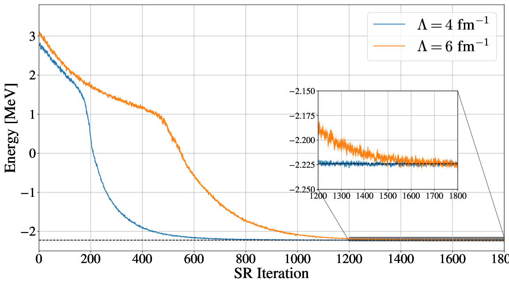

Machine Learning applied to solving Nuclear Many-body Problems
Morten Hjorth-Jensen [1, 2]
[1] Department of Physics and Astronomy and FRIB/NSCL Laboratory, Michigan State University, USA
[2] Department of Physics and Center for Computing in Science Education, University of Oslo, Norway
IAEA AI Technical Meeting: Nuclear Physics Working Group, October 25-29, 2021
What is this talk about?
The main aim is to give you a short introduction to how we can use Machine Learning methods
to solve quantum mechanical many-body problems. And why this could be of interest.
Thanks to Jane Kim (MSU), Julie Butler (MSU), Vilde Flugsrud (UiO), Even Nordhagen (UiO), Alessandro Lovato (ANL).
More material
Why? Basic motivation
How can we avoid the dimensionality curse? Many possibilities
- smarter basis functions
- resummation of specific correlations
- stochastic sampling of high-lying states (stochastic FCI, CC and SRG/IMSRG)
- many more
Machine Learning and Quantum Computing hold also great promise in tackling the
ever increasing dimensionalities. A hot new field is
Quantum Machine Learning, see for example the recent textbook by
Maria Schuld and Francesco Petruccione. Here we will focus on Machine Learning.
What are the basic ingredients?
Almost every problem in ML and data science starts with the same ingredients:
- The dataset \( \mathbf{x} \) (could be some observable quantity of the system we are studying)
- A model which is a function of a set of parameters \( \mathbf{\alpha} \) that relates to the dataset, say a likelihood function \( p(\mathbf{x}\vert \mathbf{\alpha}) \) or just a simple model \( f(\mathbf{\alpha}) \)
- A so-called loss/cost/risk function \( \mathcal{C} (\mathbf{x}, f(\mathbf{\alpha})) \) which allows us to decide how well our model represents the dataset.
We seek to minimize the function \( \mathcal{C} (\mathbf{x}, f(\mathbf{\alpha})) \) by finding the parameter values which minimize \( \mathcal{C} \). This leads to various minimization algorithms. It may surprise many, but at the heart of all machine learning algortihms there is an optimization problem.
Quantum Monte Carlo Motivation
Basic steps
Choose a trial wave function
\( \psi_T(\boldsymbol{R}) \).
$$
P(\boldsymbol{R},\boldsymbol{\alpha})= \frac{\left|\psi_T(\boldsymbol{R},\boldsymbol{\alpha})\right|^2}{\int \left|\psi_T(\boldsymbol{R},\boldsymbol{\alpha})\right|^2d\boldsymbol{R}}.
$$
This is our model, or likelihood/probability distribution function (PDF). It depends on some variational parameters \( \boldsymbol{\alpha} \).
The approximation to the expectation value of the Hamiltonian is now
$$
\langle E[\boldsymbol{\alpha}] \rangle =
\frac{\int d\boldsymbol{R}\Psi^{\ast}_T(\boldsymbol{R},\boldsymbol{\alpha})H(\boldsymbol{R})\Psi_T(\boldsymbol{R},\boldsymbol{\alpha})}
{\int d\boldsymbol{R}\Psi^{\ast}_T(\boldsymbol{R},\boldsymbol{\alpha})\Psi_T(\boldsymbol{R},\boldsymbol{\alpha})}.
$$
Running the codes
You can find the codes for the simple two-electron case at http://compphysics.github.io/ComputationalPhysics2/doc/LectureNotes/_build/html/boltzmannmachines.html.
The trial wave function are based on the product of a Slater determinant with either only Hermitian polynomials or Gaussian orbitals, with and without a Pade-Jastrow factor (PJ).
Energy as function of iterations, \( N=2 \) electrons
Onebody densities \( N=6 \), \( \hbar\omega=1.0 \) a.u.
Onebody densities \( N=6 \), \( \hbar\omega=0.1 \) a.u.
Onebody densities \( N=30 \), \( \hbar\omega=1.0 \) a.u.
Onebody densities \( N=30 \), \( \hbar\omega=0.1 \) a.u.
Or using Deep Learning Neural Networks
Machine Learning and the Deuteron by Kebble and Rios and
Variational Monte Carlo calculations of \( A\le 4 \) nuclei with an artificial neural-network correlator ansatz by Adams et al.
Adams et al:
$$
\begin{align}
H_{LO} &=-\sum_i \frac{{\vec{\nabla}_i^2}}{2m_N}
+\sum_{i < j} {\left(C_1 + C_2\, \vec{\sigma_i}\cdot\vec{\sigma_j}\right)
e^{-r_{ij}^2\Lambda^2 / 4 }}
\nonumber\\
&+D_0 \sum_{i < j < k} \sum_{\text{cyc}}
{e^{-\left(r_{ik}^2+r_{ij}^2\right)\Lambda^2/4}}\,,
\label{_auto1}
\end{align}
$$
where \( m_N \) is the mass of the nucleon, \( \vec{\sigma_i} \) is the Pauli
matrix acting on nucleon \( i \), and \( \sum_{\text{cyc}} \) stands for the
cyclic permutation of \( i \), \( j \), and \( k \). The low-energy constants
\( C_1 \) and \( C_2 \) are fit to the deuteron binding energy and to the
neutron-neutron scattering length
Replacing the Jastrow factor with Neural Networks
An appealing feature of the ANN ansatz is that it is more general than the more conventional product of two-
and three-body spin-independent Jastrow functions
$$
\begin{align}
|\Psi_V^J \rangle = \prod_{i < j < k} \Big( 1-\sum_{\text{cyc}} u(r_{ij}) u(r_{jk})\Big) \prod_{i < j} f(r_{ij}) | \Phi\rangle\,,
\label{_auto2}
\end{align}
$$
which is commonly used for nuclear Hamiltonians that do not contain tensor and spin-orbit terms.
The above function is replaced by a four-layer Neural Network.

Conclusions and where do we stand
- Extension of the work of G. Carleo and M. Troyer, Science 355, Issue 6325, pp. 602-606 (2017) gives excellent results for two-electron systems as well as good agreement with standard VMC calculations for many electrons.
- Promising results with neural Networks as well. Next step is to use trial wave function in final Green's function Monte Carlo calculations.
- Minimization problem can be tricky.
- Anti-symmetry dealt with multiplying the trail wave function with either a simple or an optimized Slater determinant.
- Extend to more fermions. How do we deal with the antisymmetry of the multi-fermion wave function?
- Here we also used standard Hartree-Fock theory to define an optimal Slater determinant. Takes care of the antisymmetry. What about constructing an anti-symmetrized network function?
- Use thereafter ML to determine the correlated part of the wafe function (including a standard Jastrow factor).
- Can we use ML to find out which correlations are relevant and thereby diminish the dimensionality problem in say CC or SRG theories?
- And many more exciting research avenues
© 1999-2021, Morten Hjorth-Jensen. Released under CC Attribution-NonCommercial 4.0 license